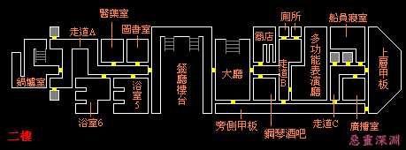
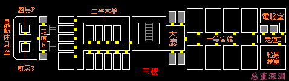
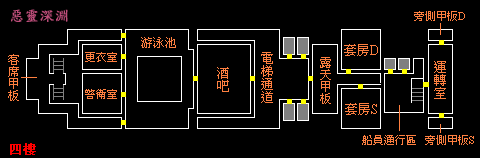
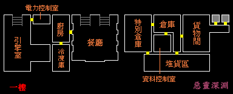
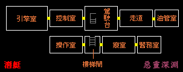

|
惡靈古堡∼Gaiden----地圖攻略
|
|
 玩家一開始的位置是在二樓的旁側甲板，旁邊掛救生圈還有窗戶處有手槍子彈和黃色藥草可以拿，地上則有資訊 文件。 進入大廳後有一些僵屍迎面而來，在左上方有逃跑文件，拿到後前往餐廳樓台。 一進入就可以看到地上有健康度文件，往內走，樓梯附近有綠色藥草、保險絲，通往走道A的門前 有裝備文件。 往走道A，兩間浴室之間的走廊上有手槍彈，轉角處有道具文件，下一個轉角直走到電梯之前共有手槍彈、散彈 槍、散彈三樣道具，附近有一隻僵屍身上有電梯1鑰匙，務必要拿到手。 拿到散彈槍後回頭進入浴室5，右上角有 手槍彈、散彈。浴室6裡有散彈、紫色藥草、中毒文件。往下面的電梯前有逃脫文件。這裡的兩台電梯 都是通往 三樓走道E，使用電梯1鑰匙後即可搭乘。
 走道E上有射擊文件，上樓梯到四樓客席甲板。
 客席甲板上方地板上有防具文件，先找到附近僵屍身上的警衛室卡片再前往游泳池。 游泳池左上方有繩索，先帶著以後用得到。更衣室裡有藍色藥草、榴彈 （要拿到槍之後才能拿彈藥）。 使用卡片打開警衛室後，調查監控器，會發現Lucia，她的正確位置在露天甲板，記得先到游泳池上方找帶有酒吧 鑰匙的女僵屍。 通過酒吧來到電梯通道，往上有綠色藥草和Titanium防具，整理一下裝備後到露天甲板。 為了救Lucia必須強制和B.O.W.決戰，勝利後到上方找找，有黃色藥草、手槍彈。另外套房S裡有榴彈。套房D裡的 僵屍身上有電梯2鑰匙。 回電梯通道使用鑰匙搭乘電梯，準備要到三樓尋找Leon。 出電梯的位置是三樓大廳，在這裡拿到Lucia給的二等客艙鑰匙。使用鑰匙進入二等客艙，最上方的走道上由右到 左有綠色藥草、手槍彈、來福槍彈；中間一排的房間由右到左有散彈、黃色藥草、炸彈、Kevlar防具 ；下排的房 間只有右二那間有除鎖工具。到左上角房間前使用除鎖工具，裡面有來福槍、C34房鑰匙。C34房就是 左下角那 間，裡面可以找到一等客艙鑰匙。 回到大廳進入一等客艙，上排右二的房間有黃色藥草，上排右一的地板破了一個大洞，Leon就在裡面，之前在四 樓游泳池拿的繩索剛好派上用場，下到二樓的多功能表演廳，並和Leon一起行動。
出來到走道B上可以先打開通往旁側甲板的門，回到走道往上走，右邊那間廁所裡有醫藥室鑰匙、散彈。商店裡 有紫色藥草、Titanium防具、榴彈；鋼琴酒吧地上有圖書室文件，在鋼琴後面有一隻僵屍身上帶著圖書室鑰匙。 從餐廳樓台樓梯下去抵達一樓餐廳。在餐廳中央附近有廚房鑰匙、綠色藥草、手槍彈，打開廚房的門，裡面有黃 色藥草、手槍彈。用在二樓拿到的保險絲打開往冷凍庫的門，中間箱子附近有榴彈槍，右下角有工作區鑰匙。回 餐廳時找找看左上角有紅色藥草，兩個樓梯中間有榴彈。 打開圖書室，裡面有景觀休息室鑰匙、Kevlar防具、手槍彈、廚房文件。用鑰匙打開隔壁醫藥室，裡面有Diamet防 具、手槍彈、黃色藥草、紫色藥草。然後搭乘走道A底部的電梯到三樓。
用鑰匙打開景觀休息室，休息室附近的一隻僵屍身上有員工通行證，廚房S裡有黃色藥草，廚房P裡一隻僵屍身上 有F50號房鑰匙。F50號房的位置在三樓一等客艙下排右二那一間，裡面有黃色藥草、紫色藥草、Titanium防具、火 箭砲彈，沒有重要道具，看玩家要不要去。
回到走道E，上樓到四樓，並且到警衛室調查監控器，會看到Lucia被B.O.W.抓到二樓的上層甲板了。 回到二樓，往上層甲板。在上層甲板與B.O.W.戰鬥後，發現敵人彷彿是不死之身，只好先逃為妙。從中間的門使 用工作區鑰匙逃到走道C，廣播室裡有手槍彈，然後直接搭電梯往三樓，抵達走道D。 使用炸彈打開往船長寢室的門，裡面有Diamt防具、電腦室卡片。 用電腦室卡片開啟對面的電腦室，在此可拿到電腦文件、控制室卡片；另外調查面板，如果身上有之前提示過 可以在三樓景觀休息室僵屍處取得的員工通行證，就可以完成這部分的任務。
 接下來搭電梯前往一樓，貨物間的上方有焊接工具，到手後 用焊接工具打開特別倉庫，裡面有電腦室卡片（由於 之前已經取得，這裡就不會再取得）、鐵撬，左上角還有強力武器火箭砲。到二樓，用鐵撬打開船員寢室的門， 裡面有黃色藥草、滅火器。 到資料控制室門前，使用滅火器滅火，再用控制室卡片開門，在裡面有一張資料磁片，可以用於房間左上角的機 器，如此一來總算是完成了，離開前要打倒其中一隻僵屍拿取身上的電梯鑰匙。
到四樓警衛室經由監控器發現Barry不知在跟誰說話，兩人決定到二樓鋼琴酒吧去找Barry問個清楚。 抵達鋼琴酒吧後，Barry竟然威脅Leon交出Lucia，此時船開始爆炸，Leon必須前往一樓的引擎室看個究竟。 先搭乘東側的電梯到四樓，用鑰匙打開四樓的電梯門，運轉室有鍋爐室鑰匙、瓦斯槍，之後就可以 回到二樓，再 從二樓走道A使用鍋爐室鑰匙進入鍋爐室，左側有火箭砲彈，然後從樓梯到一樓引擎室。 引擎室上層有手槍彈，旁邊的電力控制室裡有榴彈，要往下層時整理一下裝備，下去時稍微靠左，可以在左邊盡 頭找到手槍彈，往右就要和B.O.W.決鬥了。 這場戰鬥和一般的有點不同，目的是要把牠打退，只要持續給予傷害，牠就會一直後退，玩家就可以輕鬆勝利， 千萬不要想用小刀或是手槍來戰鬥。
 之後會切換到Barry，一連串的真相也在此被揭露，Barry必須要和被病毒侵入的船長戰鬥，船長的攻擊力很強，速 戰速決。結束戰鬥之後確認位置是在潛艇的醫務室，附近有紫色、藍色、黃色藥草記得收集。 接著在寢室可以找到Diamet防具、榴彈、來福彈、手槍彈；操作室中有紅色藥草、綠色藥草、手槍彈；然後從樓 梯間上去到駕駛台，駕駛台上碰到B.O.W.，附近另有紫色藥草、散彈、瓦斯彈，拿完趕快逃離這個房間；油管室 有火箭砲彈，控制室裡較左邊的面板上有手槍彈，較右邊的面板調查後就可以準備回到客船上了。
回到客船二樓上層甲板後，兩人必須到一樓的引擎室找Leon，但是由於方才的爆炸，很多的路都被火焰佔據不能 通過，正確的路應該從二樓旁側甲板─大廳─三樓大廳─電梯─四樓電梯通道─酒吧─游泳池上方通路─客席甲 板─三樓走道E─二樓走道A─鍋爐室。 在鍋爐室遇到冒充Leon的B.O.W.，能躲則躲，下樓梯到一樓引擎室，這裡終於找到真正的Leon。目前整艘客船已 經快要爆炸，所以要趕快回到潛艇上。離開前先到下層右側有散彈、來福彈。 回去的路和來時有點不同，路線是：二樓鍋爐室─走道A─餐廳樓台─大廳─走道B─旁側甲板─走道C。 在走道C的門口又碰上B.O.W.，將牠擊倒後到上層甲板，又發生B.O.W.冒充Lucia事件，這次真的是最後一次的戰 鬥了，傾全力打倒牠後就可以看到最終劇情，是個令人意想不到的結局喔。 未經許可禁止轉載連結 |
惡靈深淵Biohazard Abyss http://98.to/coolbio